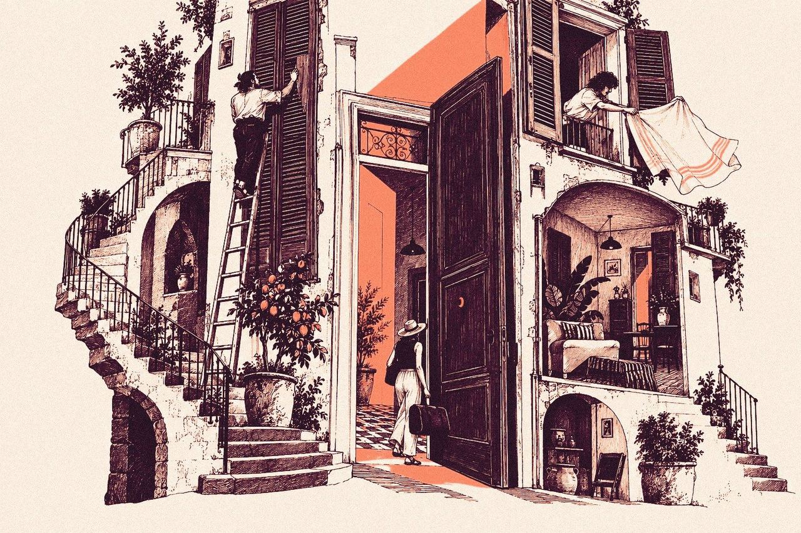

Studio · Linguaggio visivo
Due famiglie, un solo accento.
Le illustrazioni parlano con due segni diversi, ognuno con un compito. Le tiene insieme una regola: tutto è in plum e crema, e il corallo compare solo dove entra la luce o si apre una soglia.
A · Principale
Silhouette e luce
Campiture piene, poche forme, un fascio di luce. Si legge subito, anche in piccolo.


- Quando
- Emozione e primo contatto: copertine, post social, le card della home.
- Dove
- Facebook, Instagram, home “Aprire” e “Preparare”.
- Non usarla
- Per spiegare un processo o un contenuto tecnico.
B · Secondaria
Incisione di dettaglio
Tratto fine e ricco, la casa vista da vicino. Dice: questa casa la conosciamo.


- Quando
- Spiegare: metodo, guide, articoli, informazioni sulla casa.
- Dove
- Substack, Diario, articolo sul preventivo, home “Accogliere”.
- Non usarla
- Molto piccola: il dettaglio si perde sotto i 300 px.
Cosa le tiene insieme
- Un solo accento corallo, sempre sulla luce o sulla soglia. Mai decorativo.
- Solo plum e crema per tutto il resto, con la grana della stampa.
- Una famiglia per volta nello stesso blocco: si possono alternare nella pagina, non affiancare nella stessa riga.
- Stessi soggetti: finestre, persiane, soglie, scale, la casa ligure.